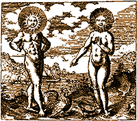

Unpaid
AdvertisementUnpaid
AdvertisementUnpaid
AdvertisementThe Televisionary Oracle is brought to you by Telepathics Anonymous, a 13-step recovery program for those who're never sure where other people's feelings leave off and their own begin. Are you one of the millions suffering from chronic psychic contagion? Telepathics Anonymous offers living proof that the cult of scientism doesn't have a clue about how human minds continually overlap.
As a get-acquainted gift, the professional boundary-setters at Telepathics Anonymous would like to present you with an omen concerning the future of an illusion you hate to love. Look for it exactly 71 hours and 25 minutes from right NOW!

Stuff You Really Don't Need to Know
"Sooner or later we'll all become well-rounded, highly-skilled, incredibly rich anarchists with lots of leisure time."
--Rob Brezsny
"I'd be friends with the sparrows and the boy who shoots the arrows if I only had a brain."
--The Straw Man
"Wouldn't it be pretty to think so."
--Ernest "Papa" Hemingway
In honor of last month's rush of nuptial events, we offer the following fun-facts intended to dry up every eye that leaked at the sight of the bride, the groom, and the best man huddled together in their fancy togs.
According to our favorite summer reading, Extraordinary Origins of Everyday Things by Charles Panati (Harper & Row; 1987), the traditions of Western marriage began some time ago, around 200 A.D., as practiced by the Germanic Goths.
Such lovely, feel-good niceties as the honoring of the best man began when the Goths ran out of village girls to wed. Raiding for wives in other villages was tough work for only one anxious groom-to-be. He needed help, and would liberally enlist the aid of the best man available. He and his chum would then travel to a neighboring village, grab the understandably upset bride-elect, and decamp home with her for the festive ceremony.
Thus, also, was born the sweet gesture of carrying the bride over her new home's threshold. When she's kicking, screaming, and biting, it's difficult to invite her in any other way.
Additionally, the best man stands with the groom during the ceremony as preparation for fighting off any enraged new in-laws, and the groom stands to the bride's right so that he can grip her with his left hand while keeping his right at the ready for his sword, should his new relatives wish to speak severely to him with blades of their own.
This sentimental stuff really chokes you up, doesn't it?
All of this makes us long to be more like geese, which get together and stick together. One of the reasons that geese fly in formation is because a flock working together exert 72 pounds more uplifiting pressure than one travelling alone, making the flight loftier and faster.
What do you know that everyone else should, too? Let us in on it and we'll share the glory around.
Twin Town: Seeing Double over Doppelgangers
On your best days, you feel serenely individual, the you-iest you around, a complete and whole person with thoughts, dreams, quirks, and talents that no one else possesses. You are the snowflake that matches no other in a blizzard; the thumbprint whose whorls have never been inked; the proudest pebble on the beach. And then, one day, you are--perhaps as I was--sitting innocently in a large department store trying on shoes.
A large woman in uncomfortably small white pants who was suffering under pounds of stiffening hair products and gold plate steamed up to a pair of shoes that I had just spent five minutes weighing on the worthiness meter. The results had been inconclusive, and I had put them down, though their allure still buzzed. The woman's two small bored sons twisted away from her just as she picked up one of the shoes. "I can't tell," she asked the boys, "Are these cute?"
My snowflake, my thumb, and my pebble shifted. This is exactly what I ask my small bored sons on shopping expeditions. The eldest looked up. "No," he said flatly. "They're not." My snowflake melted. This is what my oldest son says no matter how obviously and outrageously adorable the product clearly is.
"I like them," she said resolutely, clearly needing his disapproval to make her decision. I understood.
Across the shoe racks, her friend called. "Hey, Gretchen, we need to go." Confused for a moment, I started to rise, only to see the white pants, the gold plate, and the big hair move at the command. Usually that directive is followed by the eager bounding of a German shepherd to her master. This time it was my double, trailed by her antsy sons.
I sank back into my chair. "Give up Cheetos," I intoned to myself as a lesson. Dry hair in the sun, I listed. Wear silver. Burn my white pants.
Getting up to re-examine Twinny's excellent choice in footwear, I thought with satisfaction, "Never listen to the boys when it comes to shoes."
--Gretchen Giles
Ever see yourself when you aren't looking in the mirror? Who is it and what in the Goddess's name have you learned?
Back to the Table of Contents.
Surf the Boulevards network
to other great alternative
content sites.